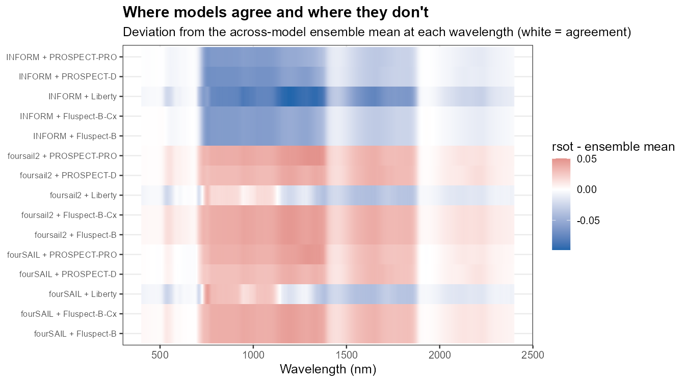
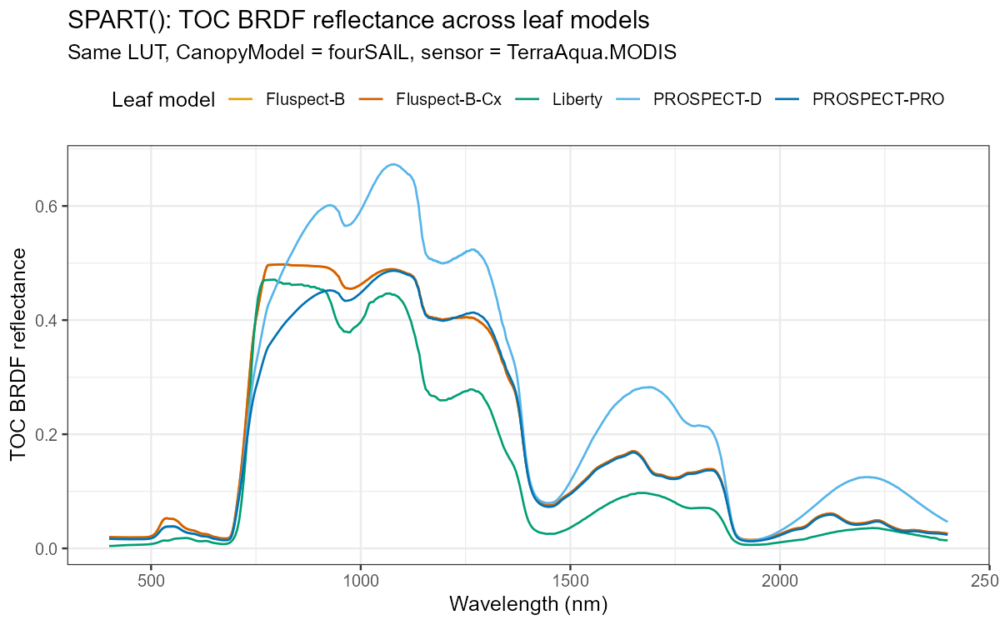
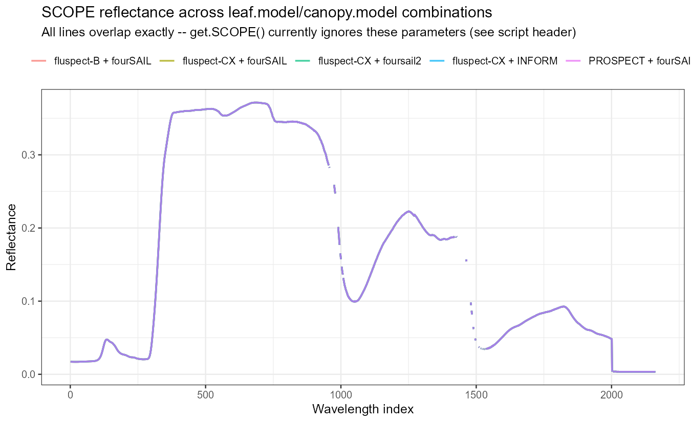
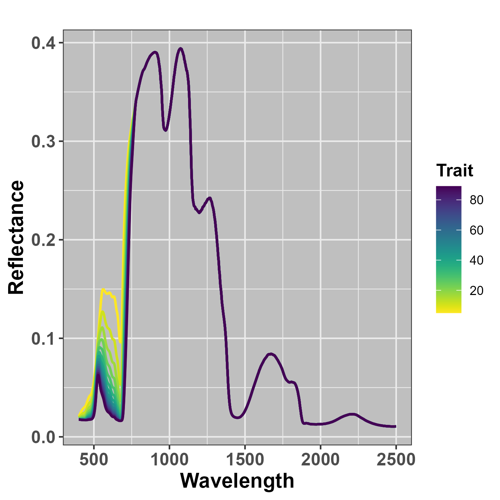
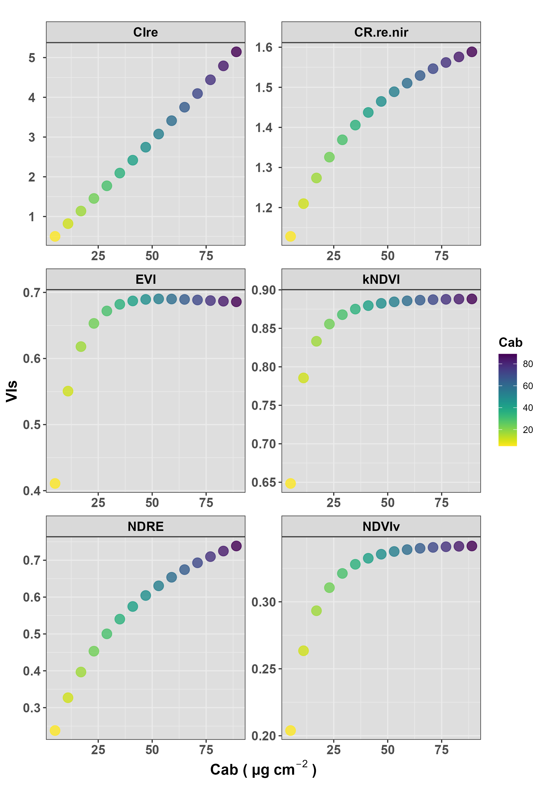
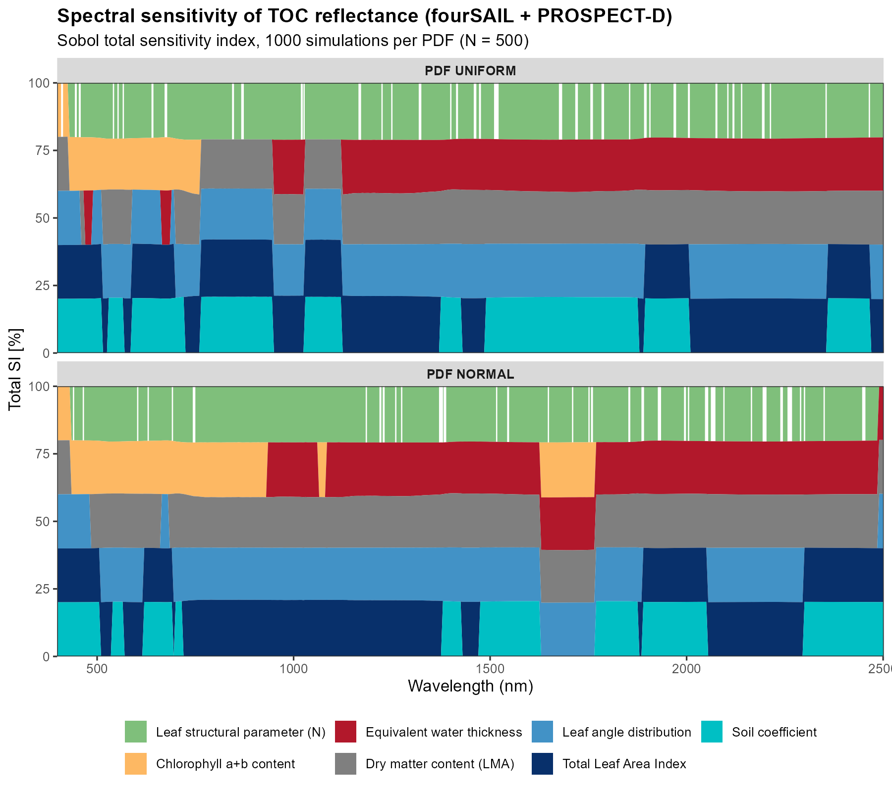
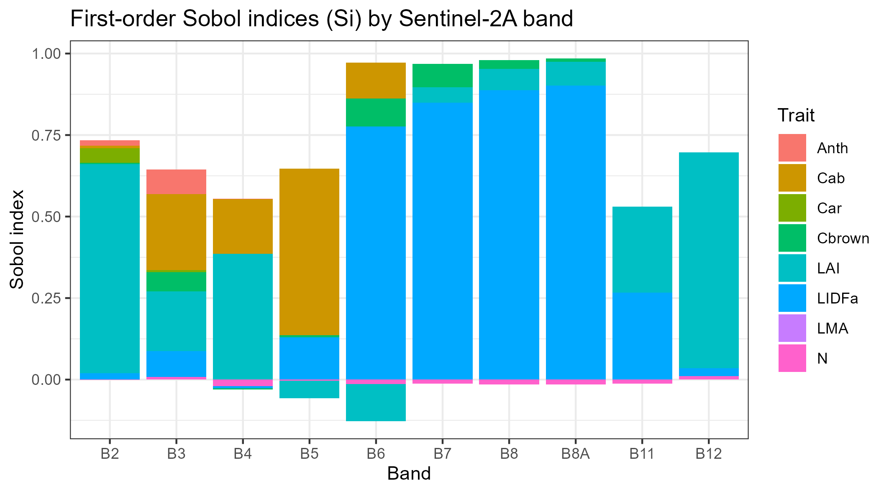
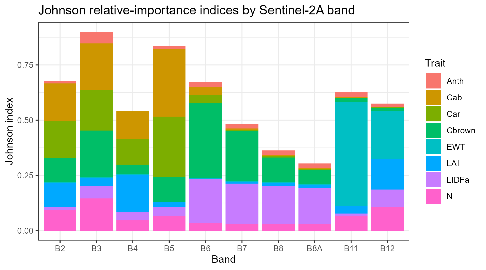

Model comparison and sensitivity analysis
model-comparison-and-sensitivity.RmdTwo different questions, two different folders in
Scripts/:
-
Scripts/Comparison/– given the same trait inputs, how much do the different leaf/canopy models actually disagree with each other? -
Scripts/Sensibility/– given one model, which traits actually drive which wavelengths, and by how much?
Both are about understanding the models themselves, not retrieving traits from real data – useful before you trust an inversion result.
Model comparison
Scripts/Comparison/compare_RTM_models.R runs every leaf
model (PROSPECT-PRO, PROSPECT-D, Liberty, Fluspect-B, Fluspect-B-Cx)
crossed with every canopy model (fourSAIL, foursail2, INFORM) on the
same LUT row, then plots:

…and a difference/agreement heatmap – deviation of each combination from the ensemble mean, at every wavelength, so you can see where models agree (white) and diverge (saturated colour), not just a single aggregate number:

compare_SPART_models.R does the same for SPART’s TOC
BRDF reflectance across all 5 leaf models:

And compare_SCOPE_models.R checks something different:
whether SCOPE’s leaf.model/canopy.model
arguments actually change anything (they don’t – SCOPE always runs its
own integral multi-layer Fluspect-Cx + RTMo, so those arguments are
documented no-ops, verified rather than assumed):

Sensitivity analysis
Scripts/Sensibility/ has four scripts, each answering
“which traits matter” with a different method:
| Script | Method | Scope |
|---|---|---|
0-Sensibility_indices.R |
One-at-a-time (OAT) | Sweep one trait, hold others fixed |
1-Sobol_spectral_sensitivity.R |
Sobol total index, per wavelength | Global, full spectrum |
2-Sobol_perband_sensitivity.R |
Sobol Si/Ti, per Sentinel-2A band | Global, discrete bands |
3-Johnson_relative_importance.R |
Johnson relative importance | Regression-based, per band |
One-at-a-time (OAT)
The simplest and most intuitive: vary one trait across a realistic range with everything else fixed, and watch the spectrum respond.


Global Sobol sensitivity, across the full spectrum
1-Sobol_spectral_sensitivity.R uses
get.spectral.sensitivity() (which wraps
get.sobol.indices(), run once per wavelength) to get a
global variance-based sensitivity estimate – unlike OAT, every
trait varies simultaneously, so this captures interactions OAT can’t.
Run twice, comparing a Uniform-PDF sampling scenario against a Gaussian
one:

Global Sobol sensitivity, per Sentinel-2A band
2-Sobol_perband_sensitivity.R uses the
sensobol package’s proper quasi-random design
(sobol_matrices() → evaluate foursail() at
every design point → sobol_indices()) to get first-order
(Si) and total (Ti) indices per band, rather than per native
wavelength:

Structural traits (LAI, LIDFa) dominate the
NIR/SWIR bands (B6-B8A, B11-B12); pigments
(Cab/Car/Anth) dominate the
visible bands (B2-B5) – exactly what leaf/canopy optics theory predicts,
and a useful sanity check that the whole simulate-and-estimate pipeline
is behaving.
Johnson relative importance
3-Johnson_relative_importance.R is a regression-based
alternative (sensitivity::johnson()) – doesn’t need the
special Sobol quasi-random design, an ordinary random LUT is enough, but
it answers a related-but-different question (relative contribution to
explained variance, not a variance decomposition):

Note EWT dominating band B11 (SWIR, a classic
water-absorption region) – both methods agree structural/water traits
dominate SWIR while pigments dominate the visible, which is reassuring:
two different statistical methods converging on the same physical
story.
A practical note on zero-variance predictors
Building
Scripts/Sensibility/3-Johnson_relative_importance.R
surfaced a real, generically-useful gotcha: johnson()’s
correlation-matrix step fails outright
(eigen(): infinite or missing values) if any predictor
column has zero variance – e.g. LMA is constant when a LUT
is built with LeafModel = "PROSPECT-PRO", since that
variant uses CBC/Prot for dry matter instead.
The script now drops any zero-variance column before calling
johnson(), with a message naming what got dropped, rather
than crashing. Worth checking for in your own code any time you feed a
LUT-derived data.frame into a correlation- or regression-based
method.